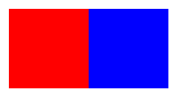

referenced-nonzero-viewbox
SVG输入

PNG输出

{
"uid": "12581",
"source": "/Users/lichao/.local/share/user-feedback/graphics/20261117/seed/cairosvg/__init__.py",
"tests": 2,
"passed": 0,
"failed": 2,
"checks": [
{
"name": "referenced-viewbox-offset-and-double-scale",
"passed": false,
"error": "(25, 25, (0, 0, 0, 0), (255, 0, 0, 255))"
},
{
"name": "zero-viewbox-skipped-and-sibling-drawn",
"passed": false,
"error": "float division by zero"
}
]
}SVG输入

PNG输出